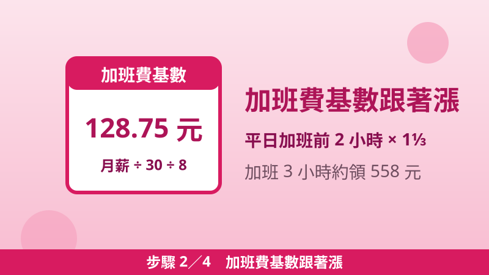

2027 最低工資調到 30,900 元：月薪＋1,400、時薪 205 元，4 步驟檢查你的薪水有沒有少給
勞動部最低工資審議會 2026 年 9 月 24 日決議、10 月 16 日公告：2027 年 1 月 1 日起，每月最低工資由 29,500 元調升至 30,900 元，每小時由 196 元調升至 205 元。連續第 11 年調漲，月薪首度突破 3 萬元，勞動部估計約 261.16 萬名勞工受惠（本國約 219.72 萬人）。調薪不只影響底薪族，加班費、打工族時薪、違規罰鍰也跟著變。下面用 4 個步驟檢查你的薪水有沒有少給。
近 3 年最低工資對照表
最低工資法 2024 年施行後，法定名稱從「基本工資」改成「最低工資」，每年由勞、資、學、政四方組成的審議會決議，次年 1 月 1 日實施。近 3 年數字如下：
| 實施日 | 每月最低工資 | 每小時最低工資 |
|---|---|---|
| 2025/1/1 | 28,590 元 | 190 元 |
| 2026/1/1 | 29,500 元 | 196 元 |
| 2027/1/1 | 30,900 元 | 205 元 |
從 2016 年月薪 20,008 元、時薪 120 元算起，月薪總調幅 54.4%、時薪 70.8%。月薪落在 29,500–30,899 元之間的人，2027 年 1 月起原本的薪水就低於法定底線，雇主一定要調。
圖文四步驟：檢查你的薪水有沒有少給
步驟 1先對薪資單：月薪 29,500–30,899 元者 1 月起一定要調
拿出薪資單：月薪在 29,500–30,899 元之間的人，2027 年 1 月起雇主一定要調到 30,900 元以上。勞動部明文提醒，雇主給付的工資無論按月、按日或按時計酬，都不能低於法定最低工資；合約寫低也不能當作少給的理由。

步驟 2加班費基數跟著漲：月薪 ÷ 30 ÷ 8，每小時 128.75 元
加班費先算「平日每小時工資額」：月薪制是月薪 ÷ 30 ÷ 8；以 30,900 元算，每小時 128.75 元。平日加班前 2 小時乘 1⅓、再 2 小時乘 1⅔，加班 3 小時可領約 558 元。只用本薪算、沒把固定發放的津貼與全勤獎金算進去，是最常見的少算原因。
步驟 3打工族看時薪：205 元起，排班越多差越多
時薪制、部分工時的勞工，每小時工資 2027 年起不得低於 205 元。每月排 80 小時，月收入從 15,680 元變成 16,400 元，多 720 元；排 120 小時從 23,520 元變成 24,600 元，多 1,080 元。按日計酬也一樣，當天工資不得低於 205 元乘以當天工作時數。
步驟 4少給就申訴：留證據、打 1955，116 年起違規罰更重
先留存薪資單、出勤紀錄與勞動契約，再向當地勞工行政主管機關申訴，或打 1955 勞工申訴專線。2027 年起違規裁罰也變嚴：勞動部 2026 年 11 月 9 日修正發布裁處罰鍰共通性原則，上市櫃公司、實收資本額逾 1 億元或醫學中心違反最低工資或工時等重要規定，罰鍰 5 萬元起跳；3 年內再犯按次累加。
常見問題
2026 年 11、12 月的薪水會先漲嗎？
不會。新制自 2027 年 1 月 1 日起實施，2026 年底以前仍是月薪 29,500 元、時薪 196 元；11、12 月薪資與加班費照舊制，新數字從 2027 年 1 月工資開始算。
按日計酬、部分工時也適用嗎？
都適用。勞動部明文指出，雇主給付勞工的工資無論按月、按日或按時計酬，均不得低於法定最低工資；2027 年 1 月 1 日起月薪不低於 30,900 元、時薪不低於 205 元。
老闆說公司規定就是 29,500 元，不調怎麼辦？
公司內規、勞動契約寫低，不能拿來當作少給的理由。留存薪資單與出勤紀錄，向當地勞工行政主管機關申訴，或打 1955。
📖 延伸閱讀：115 年度綜所稅新制：免稅額 10.1 萬、標扣 13.6 萬、薪資扣除 22.7 萬，年底前 4 件事 ／ 訂閱費每月偷走你多少錢？Netflix、YouTube、Disney+、Spotify、KKBOX 家庭方案比價＋盤點 4 步驟 ／ 家庭年度省錢檢查清單：12 個項目逐項勾，漏領的補助比你想的多
📎 資料來源
- 勞動部新聞稿 2026-09-24「最低工資連11漲!審議會決定自116年1月1日起，每月最低工資調升至30,900元，每小時最低工資調升至205元。」（月薪 29,500→30,900 元、調幅 4.745%、時薪 196→205 元、受惠約 261.16 萬人、總調幅月薪 54.4%／時薪 70.8%）：mol.gov.tw
- 勞動部「歷年最低工資/基本工資調整」（115/10/16 發布，自 116/1/1 實施，月薪 30,900 元、時薪 205 元；近 4 年對照表）：mol.gov.tw
- 勞動部新聞稿 2026-11-09「勞動部修正發布《違反勞動基準法及最低工資法裁處罰鍰共通性原則》，納入最低工資規範，違法按次累加罰鍰」（特定對象罰鍰 5 萬元起跳、3 年內再犯按次累加、116/1/1 生效、1955 申訴專線）：mol.gov.tw
- 勞動部「按月計酬者延長工作時間（加班）時，其延時工資（加班費）如何計算？」（月薪制平日每小時工資額＝月薪 ÷ 30 ÷ 8，依勞基法第 24 條計算延時工資）：mol.gov.tw
最後查證日期：2026-11-22
免責聲明：本文僅供參考，工資與法規以勞動部最新公告為準；個別薪資爭議請洽當地勞工行政主管機關或 1955 勞工申訴專線。